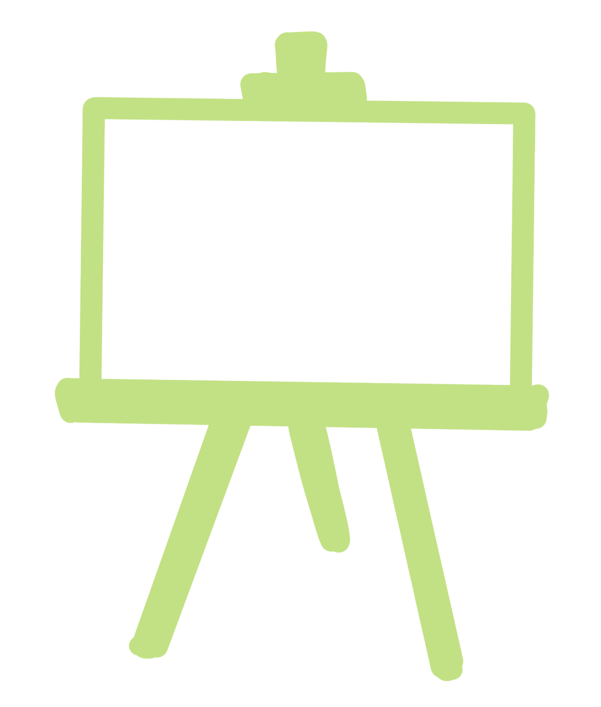

Contents
- The Scoop - a writing piece about the purity and presence of childhood
- The Scribble - a mini comic
- The Canvas - an art piece visualizing unplanned everday beauty
- The Corner - childhood recs
- Ask Us - a q&a with yours truly
- MMM - magical mundane moments
THE SCOOP
THE SIMPLICITY OF CHILDHOOD WASN'T BECAUSE I WAS A CHILD, BUT BECAUSE I WAS TRULY PRESENT.
I loved how simple things were when I was younger.
Like the original emotions from Inside Out, all I felt were joy, sadness, fear, disgust and anger. The primary colours, running the show of Ashna’s Life. And I remember it as a beautiful production laced with imagination and wonder.
Memories from childhood feel like they were recorded on an old crappy kid camera, oversaturated and without the detail that comes with maturity.
And despite the low quality, that rawness was beautiful because it was totally in the moment.
I long for that blurry, colorful lens, like an old record collector longs for the death of spotify. I long for it because it was simple.
Because I couldn’t use the full colour wheel, my picture of the world lacked complexity. People were good or bad. The only things that existed were the things in front of me. The tangible objects, sounds, tastes and sights.
Sometimes, the more you figure out about the world, the further you get from its purity. The more detail you can describe, the more you stray from the main idea.
It’s like a painting. With every addition of the shadows and highlights, you lose sight of the purest original shapes, the nondescript forms of foundation.
My visual of the world is now a gray, adult, iPhone15. It’s crisp, detailed and 4k. But with every pixel of detail I have gained, I have lost the purity of the shapes they create.
With layers upon layers of increased cognition I’ve grown to see every nuance. Joy can be specified into excitement, surprise, pleasure. People can be a little good and a little bad. Things aren’t black or white but rather always a degree of grey.
With every social interaction, instead of just seeing the person in front of me currently, I see my idea of them, my idea of their idea of me, their past, present and future, articulated by social media and whispers from others.
With every plant, instead of just a living organism I see a global climate crisis, a system of cells, a resource to pick.
With every colour I see what’s near it, hues from fuchsia to salmon.
Everything is complicated. Everything has detail. Nothing is simple.
But that’s just it.
I live in the same easy world as I did when I was less than 20 pounds.
A girl at the park approached me while I drew an elaborate hopscotch course with chalk. She simply asks, like it's the easiest thing in the world if she could help me draw? No difficulty, no quiver.
Meanwhile, I create invisible obstacles in the mission of helping others. “They might not like me” “I’m doing too much” “Someone else will do it” “Not right now”
Those excuses, those layers of complexity and lack of presence didn’t exist for her. To her it was simple.
If something is simple, it is seen to lack depth. But instead, I have come to view simplicity as the most profound purity.
Simplicity is like when you lose all concept of time. You’re talking to someone on the floor of your bedroom at some time past midnight and nothing else matters. You do not even think about glancing at the clock. In that moment it’s like you become a part of time itself, you become part of its purest form.
It’s the connection when a piece of music is able to put an indescribable feeling into notes.
It’s the magic when you make eye contact with a stranger and can’t resist the urge to smile slightly.
It’s the beauty in the candid photo that ended up being the favorite. The photo that no one planned to take is the purest.
It’s the moments that feel effortless that make life worth living.
Even if I can never return my perspective to the raw simplicity I had as a child, I can choose to pick up the kid camera sometimes.
I can choose to peel back layers of vulnerability and share my bare, pure essence with others, giving them the space to do the same.
I can choose to say yes, instead of thinking of all the ways to say no.
I can view things as they are instead of what I think they should be.
If there is one common thread through every philosophical and scientific theory it's the desire to find the purest form of our world. The underlying fabric of reality. Atoms, Plato’s Good, waves…these are all versions.
But really, I think that we all have experienced it already.
We’ve experienced the purest form of the world in childlike simplicity.
The Scribble
The Canvas

"May 23rd, 4:23pm” - Acrylic on canvas
This painting (May 23rd, 4:23 pm) captures a moment—one that is unposed, unplanned, and without any special occasion. It’s simply a girl and her cat, enjoying each other’s presence in the comfort of their neighbourhood.
I wanted to convey the beauty of everyday moments, those we often overlook. The mundane parts of our day, when seen in retrospect, can be surprisingly beautiful. Think of the large trees lining neighbourhood streets, silently witnessing families come and go. Or the sound of children’s laughter as they play in backyards, and the reflections in tinted windows as the sun sets.
As a child, I often sat on the porch, basking in the sun. I had nowhere to be, nothing to do, and, most importantly, no heavy weight on my mind. I was free to wonder and create.
These are the conditions that truly allow us to be — to exist in the present moment and observe the world as it passes by. As Ferris Bueller famously said:
“Life moves pretty fast. If you don’t stop and look around once in a while, you could miss it.”